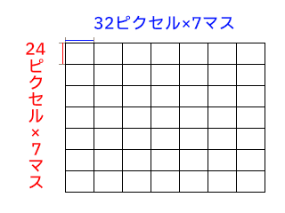
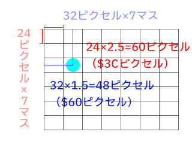

基礎知識
戦闘関係

データマップについての説明と、ROM領域は前ページ参照。
サウンド（BGM・効果音）関連はこちら
RAM（Random-Access Memory）領域はバンク$00～$3Fの$0000～$1FFF、バンク$7Eで、先に記した通りにバンク$80～にはバンク$00～がミラーリングされている。
$7E:0000～$7F:FFFFはWRAM（Work RAM）というメモリ領域で、$7E:0000～$7F:1FFFのみ、他バンクでもミラーリングされて共通の値が入る（バンク$00～$3F, $80～$BF）
だいたいの場合で$00:0000～$00:1FFF（またはミラーリングの$7E:0000～$7F:1FFF）にて数値の読み書き・計算をするのは、ここがWRAMだからである。
WRAMの$7F:2000～$7F:FFFFはミラーリングされていないため、別途、$00:2180～$00:2183に値を読み書きすることで通信をして値を書き込む。
$00:2180～$00:2183のように外部メモリとやりとりをするためのアドレスをI/Oレジスタというが、この後で説明する。
ミラーリング外の$7E:2000～には、VRAMなど外部メモリに送る画像関係データをまとめて書き込んで、ここからGDMA転送することがよくある。
※下位バイト・上位バイトについて
アドレス1つに入るデータは1バイト（16進数2文字）だが、中には連続した2つのアドレスを使って、2バイト（16進数4文字）のデータを記録している値もある。
その場合は、下位バイトのアドレスに下2桁、上位バイトのアドレスに上2桁が入っており、上位バイトアドレスの値・下位バイトアドレスの値を繋げて2バイト分のデータとする。
スーパーファミコンと周辺機器（ゲームカセット、操作用のコントローラ、及び、画像・音を出力するためのディスプレイやスピーカーつまりスーパーファミコンの時代だとブラウン管テレビ）が通信を行うための端子（接続部分）などをI/Oポートというのだが、これら周辺機器とのやりとり用に割り振られたメモリアドレスが「I/Oレジスタ」になる。
これはスーパーファミコンの仕様のため、どのスーパーファミコンソフトでも共通のはずである。
詳しいアドレスは上サイト様など参照。ここでは簡単な説明に留める。
プログラマーでない限りいろいろ詳しいことを知っておく必要はないし、筆者もわからないことだらけだが、とりあえず、知っておくと良いレジスタだけピックアップする。
用語の説明は表の下。
| アドレス | 内容 |
|---|---|
$00:2100 | ディスプレイ制御レジスタ1 |
$00:2101 | OBSEL（スプライトのサイズを設定） |
$00:2102～$00:2103 | OAMアドレス (下位8bit～上位1bit) |
$00:2104 | OAM書き込み |
$00:2105 | 背景（BG）制御レジスタ |
$00:2107 | 背景（BG1）画面設定 |
$00:2108 | 背景（BG2）画面設定 |
$00:2109 | 背景（BG3）画面設定 |
$00:210A | 背景（BG4）画面設定 |
$00:2116～$00:2117 | VRAMアドレス (下位8bit～上位8bit) |
$00:2118～$00:2119 | VRAMデータ書き込み (下位8bit～上位8bit) |
$00:2121 | CGRAM カラーパレットアドレス指定 |
$00:2122 | CGRAM カラーパレット書き込み |
$00:2140～$00:2143 | サウンド用CPUであるAPU（SPC700）とのI/Oレジスタ（$00:2144～$00:217Fは$00:2140～$00:2143をミラーリング） |
$00:2180 | WRAMデータレジスタ |
$00:2181～$00:2183 | WRAMアドレスレジスタ 3バイト (下位8bit・中位8bit・上位1bit) |
$00:4200 | 割り込み有効化レジスタ |
$00:420B | GDMA開始レジスタ |
$00:420C | HDMAチャネルレジスタ |
$00:4212 | 自動ジョイパッド読み取り機能のON・OFF状態 |
$00:4212 | bit7 自動ジョイパッド読み取り機能のONOFF記録 |
$00:4218～$00:4219 | 自動ジョイパッド読み取り機能のコントローラ1のボタン状態出力先 |
$00:421A～$00:421B | 自動ジョイパッド読み取り機能のコントローラ2のボタン状態出力先（本作未使用） |
$00:4218～$00:421F | コントローラ（ジョイパッド）出力 |
$00:43n0 | GDMA / HDMA設定レジスタ(チャネルn) |
$00:43n1 | GDMA 転送先指定 $04=OAM, $18=VRAM, $22=CGRAM, $80=WRAM |
$00:43n3～$00:43n2 | GDMA データ元アドレス（開始位置） |
$00:43n4 | GDMA データ元バンク |
$00:43n6～$00:43n5 | GDMA 転送するデータ量 |
$7E:0000～$7F:FFFFサブルーチンを見て、$00:2100～$00:213Fの読み書きをしているのならだいたい画像関係だし、$00:2140～$00:217Fならサウンド関係（バンク$C3）、$00:4218～$00:4219はコントローラ出力の判定である。
$00:43n?は他メモリとのデータのやりとり（大抵はグラフィックのデータ）で、$00:43n1に何の値を書き込んだかで、カラーパレットのデータ（$22=CGRAM）か、スプライト位置（$04=OAM）か、大雑把に把握できる。
また、スーパーファミコンには画像の伸縮回転を行う機能があるが、そのためのI/Oレジスタ$00:211B～$00:2120を利用した乗算、$00:4202～$00:4206の乗算・除算用レジスタを使った乗算・除算も頻繁に見られる。
ゲームプレイ中、プレイヤーからのコントローラ（ジョイパッド）の入力待ちのため$00:4212の状態の読み取りを1フレームに1回行っており、ログを取ってみると$00:4212の読み取りループばかり並ぶのはこのため。
ゲームのセーブデータは、ゲームのカセット内に入っているSRAMというメモリで保存する。
このメモリはボタン電池で電力を供給しており、電池切れするとデータを保持できなくなる。
ゲームのカセットがスーパーファミコンに接続され電源が入っている時は、SRAMへの電力供給はスーパーファミコン側から行われるので、もし電池切れしていても、スーパーファミコンの電源を切らない限り、セーブデータは保存可能。
SRAMは、メモリ割り当ての規格がHiROMの場合、バンク$30～$3Fのアドレス$6000～$7FFFに割り当てられている。
「ライブ・ア・ライブ」では、セーブデータ領域にバンク$30のみ使用している。
「ライブ・ア・ライブ」はセーブデータが4個あるが、データ領域は以下のように割り振られている。
| アドレス | セーブデータ |
|---|---|
$30:6000～$30:67F7 | セーブデータ1 |
$30:67F8～$30:6FEF | セーブデータ2 |
$30:6FF0～$30:77E7 | セーブデータ3 |
$30:77E8～$30:7FEF | セーブデータ4 |
1つのセーブデータにセーブされるのは、$00:0A00～$00:11F7の領域にあたる。
保存する必要があるデータが$00:0A00～$00:11F7外にある場合、そのデータを$00:0A00～$00:11F7内にコピーすることになるが、収まりきれない一部データ（主にシナリオフラグ関係のデータ）は圧縮して$00:0A00～$00:11F7にコピーされ、セーブデータに保存される。
詳細はセーブデータのセーブ・ロードを参照。
戦闘時の共通部分含む。
| アドレス | 内容 | ||||||||||||||||||||||||||||||||||||||||
|---|---|---|---|---|---|---|---|---|---|---|---|---|---|---|---|---|---|---|---|---|---|---|---|---|---|---|---|---|---|---|---|---|---|---|---|---|---|---|---|---|---|
$00:0000 | フィールド・コントローラ1のボタンを押した判定（合計値が入る） Rボタン:$10 / Lボタン:$20 / Xボタン:$40 / Aボタン:$80 | ||||||||||||||||||||||||||||||||||||||||
$00:0001 | フィールド・コントローラ1のボタンを押した判定（合計値が入る） 右:$01 / 左:$02 / 下:$04 / 上:$08 / スタートボタン:$10 / セレクトボタン:$20 / Yボタン:$40 / Bボタン:$80 | ||||||||||||||||||||||||||||||||||||||||
$00:0002～$00:0003 | フィールド・コントローラ2のボタン状況（本作では未使用） | ||||||||||||||||||||||||||||||||||||||||
$00:000C | マップ乱数計算用の値（戦闘中一時停止） | ||||||||||||||||||||||||||||||||||||||||
$00:000D | マップ乱数（戦闘中一時停止） | ||||||||||||||||||||||||||||||||||||||||
$00:002D | ランダムエンカウント時 増加値（下４ビット） | ||||||||||||||||||||||||||||||||||||||||
$00:0036 | マップ乱数（$00:000Dと同値） | ||||||||||||||||||||||||||||||||||||||||
$00:0070 | 通常は$00、デモ画面は$01以上（変動） | ||||||||||||||||||||||||||||||||||||||||
$00:0107 | ランダムエンカウント時 危険度 | ||||||||||||||||||||||||||||||||||||||||
$00:010B～$00:01FF | （※スタック領域。PHXやPHYなどのニーモニックで値を一時的に記録するアドレス。詳細：65C816のスタック） | ||||||||||||||||||||||||||||||||||||||||
$00:0114 | BG1のサイズ決定値 | ||||||||||||||||||||||||||||||||||||||||
$00:0116 | BG2のサイズ決定値 兼 背景（BG2）が多重スクロールするマップでは$01～$03, それ以外は$00 | ||||||||||||||||||||||||||||||||||||||||
$00:011F | ランダムエンカウント時 エリア危険度 | ||||||||||||||||||||||||||||||||||||||||
$00:0134 | BG1タイルマップアドレスとサイズ[$00:2107]の下2ビット（マップサイズ）の値 | ||||||||||||||||||||||||||||||||||||||||
$00:0135 | BG2タイルマップアドレスとサイズ[$00:2108]の下2ビット（マップサイズ）の値 | ||||||||||||||||||||||||||||||||||||||||
$00:013D | アイテム取得や使用時、該当アイテムのアイテムIDが入る | ||||||||||||||||||||||||||||||||||||||||
$00:014A～4C | 最終編 時のダンジョンの鐘の鳴った回数 | ||||||||||||||||||||||||||||||||||||||||
$00:0160 | 場面チェンジのエフェクト $00=黒にフェードアウト/$02=白にフェードアウト/$04=モザイク/$05=丸囲み/$06=三角囲み（戦闘突入時） | ||||||||||||||||||||||||||||||||||||||||
$00:01A0～$00:01A3 | 味方キャラ1～4の移動時の状態？ | ||||||||||||||||||||||||||||||||||||||||
$00:01A4～$00:01A8 | 味方キャラ1～4の移動時の状態？ | ||||||||||||||||||||||||||||||||||||||||
$00:01A9 | マップ上移動速度 $10:通常歩き $20:ダッシュ $40:おぼろ丸のダッシュ | ||||||||||||||||||||||||||||||||||||||||
$00:01AE | $00:01A9と同値 | ||||||||||||||||||||||||||||||||||||||||
$00:01B0 | ポゴが匂いを嗅いで、匂いに触れた時に出ている吹き出しの中身 | ||||||||||||||||||||||||||||||||||||||||
$00:01BB | ランダムエンカウント時 危険度合計値 | ||||||||||||||||||||||||||||||||||||||||
$00:01C0～ | セリフ関係（テキスト呼び出し、吹き出し形状など） | ||||||||||||||||||||||||||||||||||||||||
$00:01C1 | 吹き出しの位置と形状（吹き出しについている▽のマークの位置も） | ||||||||||||||||||||||||||||||||||||||||
$00:01C6～$00:01C7 | セリフテキスト読み込み位置指定 | ||||||||||||||||||||||||||||||||||||||||
$00:0200 | BGM切り替えの判定？ 通常$00, BGM切り替え時は$00以外 | ||||||||||||||||||||||||||||||||||||||||
$00:020A | フィールド・コントローラ1のボタンを押した判定（合計値が入る） 右:$01 / 左:$02 / 下:$04 / 上:$08 / スタートボタン:$10 / セレクトボタン:$20 / Yボタン:$40 / Bボタン:$80 | ||||||||||||||||||||||||||||||||||||||||
$00:0250～$00:0252 | HDMA転送による多段スクロール量計算用変数 | ||||||||||||||||||||||||||||||||||||||||
$00:0253～$00:0255 | HDMA転送による多段スクロール量更新タイミング計算用変数 | ||||||||||||||||||||||||||||||||||||||||
$00:0544～$00:0545 | メニュー画面での現在のカーソル位置（十字ボタンで選択可能な画面における番号） | ||||||||||||||||||||||||||||||||||||||||
$00:054D | プレイ中のシナリオ番号 | ||||||||||||||||||||||||||||||||||||||||
$00:054F | プレイ中のシナリオの主人公ID | ||||||||||||||||||||||||||||||||||||||||
$00:0565～$00:0566 | メニュー画面 持ち物欄などでAボタンで何かを選んだ状態 | ||||||||||||||||||||||||||||||||||||||||
$00:0567～$00:0568 | メニュー画面 持ち物欄などでAボタンで何かを選んだ状態で更に他位置を選択 | ||||||||||||||||||||||||||||||||||||||||
$00:0569～$00:056A | メニュー画面 装備、持ち物、技、隊形、音声、セーブを選んだ時、それぞれ$0001～$0006が入る | ||||||||||||||||||||||||||||||||||||||||
$00:0565 | 現代編 対戦相手画面 （通常$FF、対戦相手を選ぶと値が入る。ナムキャット$00、エイジャ$01、トゥーラ・ハン$02、森部$03、モーガン$04、イヤウケア$05、オディ・オブライト$07 ※ $00:0566は通常$FF、それ以外$00 | ||||||||||||||||||||||||||||||||||||||||
$00:057A | メニュー画面・GDMA転送チャネルの設定の有無 | ||||||||||||||||||||||||||||||||||||||||
$00:057D～$00:057E | メニュー画面・コントローラ1のボタン状態出力先 | ||||||||||||||||||||||||||||||||||||||||
$00:06B9 | 現代編 1番目に倒した対戦相手ID（1戦目終わるまでは$FF） | ||||||||||||||||||||||||||||||||||||||||
$00:06BA | 現代編 2番目に倒した対戦相手ID（2戦目終わるまでは$FF） | ||||||||||||||||||||||||||||||||||||||||
$00:06BB | 現代編 3番目に倒した対戦相手ID（3戦目終わるまでは$FF） | ||||||||||||||||||||||||||||||||||||||||
$00:06BC | 現代編 4番目に倒した対戦相手ID（4戦目終わるまでは$FF） | ||||||||||||||||||||||||||||||||||||||||
$00:06BD | 現代編 5番目に倒した対戦相手ID（5戦目終わるまでは$FF） | ||||||||||||||||||||||||||||||||||||||||
$00:06BE | 現代編 6番目に倒した対戦相手ID（6戦目終わるまでは$FF） | ||||||||||||||||||||||||||||||||||||||||
$00:06BF | 現代編 倒した対戦相手の人数累積（$00～$06） | ||||||||||||||||||||||||||||||||||||||||
$00:0700～$00:0920 | OAMへ転送するスプライト用データ | ||||||||||||||||||||||||||||||||||||||||
$00:0A00 | プレイ中のシナリオ 対応表 | ||||||||||||||||||||||||||||||||||||||||
$00:0A01 | シナリオのクリア状況 （8ビットが各シナリオ対応。上の桁から順に中世、原始、ＳＦ、功夫、西部、現代、近未来、幕末） | ||||||||||||||||||||||||||||||||||||||||
$00:0A02～03 | 現在居るエリアのID （マップに対応した数値、シナリオ毎に異なる） | ||||||||||||||||||||||||||||||||||||||||
$00:0A04 | $00が入っていない場合、$00:2131（I/OポートアドレスCGADSUB グラフィック用カラーマス ColorMath制御）の初期値（ほぼSF編用？） | ||||||||||||||||||||||||||||||||||||||||
$00:0A05～07 | グラフィック用カラーマス（Color Math）制御値 最終編 時のダンジョンの鐘の鳴った回数（ $00:014A～$00:014Cのコピー） | ||||||||||||||||||||||||||||||||||||||||
$00:0A10 | 最終編主人公 対応表 | ||||||||||||||||||||||||||||||||||||||||
$00:0A11 | 2人目のシナリオ別キャラデータID | ||||||||||||||||||||||||||||||||||||||||
$00:0A12 | 3人目のシナリオ別キャラデータID | ||||||||||||||||||||||||||||||||||||||||
$00:0A13 | 4人目のシナリオ別キャラデータID | ||||||||||||||||||||||||||||||||||||||||
$00:0A14 | パーティの人数（$00：1人、$01：2人、$02：3人、$03：4人） | ||||||||||||||||||||||||||||||||||||||||
$00:0A15 | 心山拳老師＆師範が誰か（功夫編・最終編のみ） $00=老師 $01=ユン $02=レイ $03=サモ | ||||||||||||||||||||||||||||||||||||||||
$00:0A20 | キャラ1 移動中のX座標のマスとマスの間の位置？ | ||||||||||||||||||||||||||||||||||||||||
$00:0A21 | キャラ1 マップのX座標（マス目） | ||||||||||||||||||||||||||||||||||||||||
$00:0A22 | キャラ2 移動中のX座標のマスとマスの間の位置？ | ||||||||||||||||||||||||||||||||||||||||
$00:0A23 | キャラ2 マップのX座標（マス目） | ||||||||||||||||||||||||||||||||||||||||
$00:0A24 | キャラ3 移動中のX座標のマスとマスの間の位置？ | ||||||||||||||||||||||||||||||||||||||||
$00:0A25 | キャラ3 マップのX座標（マス目） | ||||||||||||||||||||||||||||||||||||||||
$00:0A26 | キャラ4 移動中のX座標のマスとマスの間の位置？ | ||||||||||||||||||||||||||||||||||||||||
$00:0A27 | キャラ4 マップのX座標（マス目） | ||||||||||||||||||||||||||||||||||||||||
$00:0A28 | キャラ1 移動中のY座標のマスとマスの間の位置？ | ||||||||||||||||||||||||||||||||||||||||
$00:0A29 | キャラ1 マップのY座標（マス目） | ||||||||||||||||||||||||||||||||||||||||
$00:0A2A | キャラ2 移動中のY座標マスとマスの間の位置？ | ||||||||||||||||||||||||||||||||||||||||
$00:0A2B | キャラ2 マップのY座標（マス目） | ||||||||||||||||||||||||||||||||||||||||
$00:0A2C | キャラ3 移動中のY座標マスとマスの間の位置？ | ||||||||||||||||||||||||||||||||||||||||
$00:0A2D | キャラ3 マップのY座標（マス目） | ||||||||||||||||||||||||||||||||||||||||
$00:0A2E | キャラ4 移動中のY座標マスとマスの間の位置？ | ||||||||||||||||||||||||||||||||||||||||
$00:0A2F | キャラ4 マップのY座標（マス目） | ||||||||||||||||||||||||||||||||||||||||
$00:0A34 | キャラ1 向き 下=$00/上=$01/左=$02/右=$03 | ||||||||||||||||||||||||||||||||||||||||
$00:0A35 | キャラ2 向き 下=$00/上=$01/左=$02/右=$03 | ||||||||||||||||||||||||||||||||||||||||
$00:0A36 | キャラ3 向き 下=$00/上=$01/左=$02/右=$03 | ||||||||||||||||||||||||||||||||||||||||
$00:0A37 | キャラ4 向き 下=$00/上=$01/左=$02/右=$03 | ||||||||||||||||||||||||||||||||||||||||
$00:0A38～$00:0A39 | [$00:210D]（BG1水平スクロール量）計算用の値（2バイト） | ||||||||||||||||||||||||||||||||||||||||
$00:0A3A～$00:0A3B | [$00:210E]（BG1垂直スクロール量）計算用の値（2バイト） | ||||||||||||||||||||||||||||||||||||||||
$00:0A3C～$00:0A3D | [$00:210F]（BG2水平スクロール量）計算用の値（2バイト） | ||||||||||||||||||||||||||||||||||||||||
$00:0A3E～$00:0A3F | [$00:2110]（BG2垂直スクロール量）計算用の値（2バイト） | ||||||||||||||||||||||||||||||||||||||||
$00:0A40～$00:0A41 | [$00:210F]（BG2水平スクロール量）多重スクロール時 計算用の値（2バイト） | ||||||||||||||||||||||||||||||||||||||||
$00:0A42～$00:0A43 | [$00:2110]（BG2垂直スクロール量）多重スクロール時 計算用の値（2バイト） | ||||||||||||||||||||||||||||||||||||||||
$00:0A53 | 1人目のキャラの向き？ 下=$00/上=$01/左=$02/右=$03 | ||||||||||||||||||||||||||||||||||||||||
$00:0A54 | 1人目のキャラの座標？状態？ | ||||||||||||||||||||||||||||||||||||||||
$00:0A55 | 1人目のキャラに対する2人目のキャラの相対距離？（移動中$00 ダッシュ$04 停止$80 向き変えで値変わる） | ||||||||||||||||||||||||||||||||||||||||
$00:0A56 | 1人目のキャラに対する3人目のキャラの相対距離？ | ||||||||||||||||||||||||||||||||||||||||
$00:0A57 | 1人目のキャラに対する4人目のキャラの相対距離？ | ||||||||||||||||||||||||||||||||||||||||
$00:0A60 | フィールド上 サウンドルームBGMとは異なる BGM一覧表 | ||||||||||||||||||||||||||||||||||||||||
$00:0A61 | BGMの再生ピッチ？（通常$FF、「いいお天気でしょっ!」の夜バージョンは$60） | ||||||||||||||||||||||||||||||||||||||||
$00:0AB0 | 主人公の行動順-1 （以下 $00:0AB3まで入る数値は$00～$03のいずれか、味方キャラ順は加入順） | ||||||||||||||||||||||||||||||||||||||||
$00:0AB1 | 味方キャラ1の行動順-1 | ||||||||||||||||||||||||||||||||||||||||
$00:0AB2 | 味方キャラ2の行動順-1 | ||||||||||||||||||||||||||||||||||||||||
$00:0AB3 | 味方キャラ3の行動順-1 | ||||||||||||||||||||||||||||||||||||||||
$00:0AB1 | 隊形で左の位置にいる味方キャラ | ||||||||||||||||||||||||||||||||||||||||
$00:0AB2 | 隊形で右の位置にいる味方キャラ | ||||||||||||||||||||||||||||||||||||||||
$00:0AB3 | 隊形で下の位置にいる味方キャラ | ||||||||||||||||||||||||||||||||||||||||
$00:0AB4～$00:0AB5 | セーブ回数 下位バイト/上位バイト 999回（$03E7）を越えると0に戻る | ||||||||||||||||||||||||||||||||||||||||
$00:0AC0～$00:0AC1 | マップタイマー00～15のON・OFF C0に下位バイト、C1に上位バイト | ||||||||||||||||||||||||||||||||||||||||
$00:0AC2～$00:0AC3 | マップタイマー00～15関連フラグ値 C2に下位バイト、C3に上位バイト | ||||||||||||||||||||||||||||||||||||||||
$00:0AC5 | 原始編・近未来編のシンボルエンカウントのON/OFF？ | ||||||||||||||||||||||||||||||||||||||||
$00:0ACA～$00:0ACB | ポゴがパーティにいる時のみ、匂いを嗅いだ時の漂う匂いの表示タイマー。 匂いを嗅ぐと、 $00:0ACAに$01、$00:0ACBに$68が入り、360フレーム（6秒）のカウントを行う | ||||||||||||||||||||||||||||||||||||||||
$00:0ACC | 原始編でポゴが匂いを嗅げる、かつシンボルエンカウントありエリアだと$01が入る | ||||||||||||||||||||||||||||||||||||||||
$00:0ACE | 主人公キャラID（最終編は$08で固定）対応表 | ||||||||||||||||||||||||||||||||||||||||
$00:0AE0～$00:0AE1 | マップタイマー00残り時間 下位バイト/上位バイト | ||||||||||||||||||||||||||||||||||||||||
$00:0AE2～$00:0AE3 | マップタイマー01残り時間 下位バイト/上位バイト | ||||||||||||||||||||||||||||||||||||||||
$00:0AE4～$00:0AE5 | マップタイマー02残り時間 下位バイト/上位バイト | ||||||||||||||||||||||||||||||||||||||||
$00:0AE6～$00:0AE7 | マップタイマー03残り時間 下位バイト/上位バイト | ||||||||||||||||||||||||||||||||||||||||
$00:0AE8～$00:0AE9 | マップタイマー04残り時間 下位バイト/上位バイト | ||||||||||||||||||||||||||||||||||||||||
$00:0AEA～$00:0AEB | マップタイマー05残り時間 下位バイト/上位バイト | ||||||||||||||||||||||||||||||||||||||||
$00:0AEC～$00:0AED | マップタイマー06残り時間 下位バイト/上位バイト | ||||||||||||||||||||||||||||||||||||||||
$00:0AEE～$00:0AEF | マップタイマー07残り時間 下位バイト/上位バイト | ||||||||||||||||||||||||||||||||||||||||
$00:0AF0～$00:0AF1 | マップタイマー08残り時間 下位バイト/上位バイト | ||||||||||||||||||||||||||||||||||||||||
$00:0AF2～$00:0AF3 | マップタイマー09残り時間 下位バイト/上位バイト | ||||||||||||||||||||||||||||||||||||||||
$00:0AF4～$00:0AF5 | マップタイマー10残り時間 下位バイト/上位バイト | ||||||||||||||||||||||||||||||||||||||||
$00:0AF6～$00:0AF7 | マップタイマー11残り時間 下位バイト/上位バイト | ||||||||||||||||||||||||||||||||||||||||
$00:0AF8～$00:0AF9 | マップタイマー12残り時間 下位バイト/上位バイト | ||||||||||||||||||||||||||||||||||||||||
$00:0AFA～$00:0AFB | マップタイマー13残り時間 下位バイト/上位バイト | ||||||||||||||||||||||||||||||||||||||||
$00:0AFC～$00:0AFD | マップタイマー14残り時間 下位バイト/上位バイト | ||||||||||||||||||||||||||||||||||||||||
$00:0AFE～$00:0AFF | マップタイマー15残り時間 下位バイト/上位バイト | ||||||||||||||||||||||||||||||||||||||||
$00:0B01～$00:0BFF | アイテム欄に入っているアイテムID（最終編） | ||||||||||||||||||||||||||||||||||||||||
$00:0B01～$00:0B27 | アイテム欄に入っているアイテムID（中世編） | ||||||||||||||||||||||||||||||||||||||||
$00:0B28～$00:0B4C | アイテム欄に入っているアイテムID（原始編） | ||||||||||||||||||||||||||||||||||||||||
$00:0B4D～$00:0B66 | アイテム欄に入っているアイテムID（西部編） | ||||||||||||||||||||||||||||||||||||||||
$00:0B67～$00:0B88 | アイテム欄に入っているアイテムID（幕末編） | ||||||||||||||||||||||||||||||||||||||||
$00:0B89～$00:0BBB | アイテム欄に入っているアイテムID（近未来編） | ||||||||||||||||||||||||||||||||||||||||
$00:0BBD～$00:0BE0 | アイテム欄に入っているアイテムID（功夫編） | ||||||||||||||||||||||||||||||||||||||||
$00:0BF5～$00:0CF9 | アイテム欄に入っているアイテムID（ＳＦ編） | ||||||||||||||||||||||||||||||||||||||||
$00:0C01～$00:0CFF | アイテム欄に入っているアイテムIDの各個数（最終編） | ||||||||||||||||||||||||||||||||||||||||
$00:0C01～$00:0C27 | アイテム欄に入っているアイテムIDの各個数（中世編） | ||||||||||||||||||||||||||||||||||||||||
$00:0C28～$00:0C4C | アイテム欄に入っているアイテムIDの各個数（原始編） | ||||||||||||||||||||||||||||||||||||||||
$00:0C4D～$00:0C66 | アイテム欄に入っているアイテムIDの各個数（西部編） | ||||||||||||||||||||||||||||||||||||||||
$00:0C67～$00:0C88 | アイテム欄に入っているアイテムIDの各個数（幕末編） | ||||||||||||||||||||||||||||||||||||||||
$00:0C89～$00:0CBB | アイテム欄に入っているアイテムIDの各個数（近未来編） | ||||||||||||||||||||||||||||||||||||||||
$00:0CBD～$00:0CE0 | アイテム欄に入っているアイテムIDの各個数（功夫編） | ||||||||||||||||||||||||||||||||||||||||
$00:0CF5～$00:0DF9 | アイテム欄に入っているアイテムIDの各個数（ＳＦ編） | ||||||||||||||||||||||||||||||||||||||||
$00:0D00～$00:0FBF | 【戦闘・マップ共通】シナリオ別キャラデータ（詳細後述） | ||||||||||||||||||||||||||||||||||||||||
$00:0F92 | 幕末編における忍者（2人組）の遭遇数$00～$06 （戦闘開始直後に増加、「逃げる」コマンド選択時に増えた分だけ減少。 $00:$0F9Fまで同じ） | ||||||||||||||||||||||||||||||||||||||||
$00:0F93 | 虚無僧の遭遇数$00～$03 | ||||||||||||||||||||||||||||||||||||||||
$00:0F94 | 奴の遭遇数$00～$0A | ||||||||||||||||||||||||||||||||||||||||
$00:0F95 | 浪人の遭遇数$00～$0A | ||||||||||||||||||||||||||||||||||||||||
$00:0F96 | 藩士の遭遇数$00～$07 | ||||||||||||||||||||||||||||||||||||||||
$00:0F97 | 強藩士の遭遇数$00～$0A | ||||||||||||||||||||||||||||||||||||||||
$00:0F98 | 外人の遭遇数$00～$02 | ||||||||||||||||||||||||||||||||||||||||
$00:0F99 | 商人の遭遇数$00～$04 | ||||||||||||||||||||||||||||||||||||||||
$00:0F9A | 家老の遭遇数$00～$05 | ||||||||||||||||||||||||||||||||||||||||
$00:0F9B | 忍者（1人）の遭遇数$00～$08 | ||||||||||||||||||||||||||||||||||||||||
$00:0F9C | くの一の遭遇数$00～$04 | ||||||||||||||||||||||||||||||||||||||||
$00:0F9D | 腰元の遭遇数$00～$09 | ||||||||||||||||||||||||||||||||||||||||
$00:0F9F | 忍者（4人組）の遭遇数$00～$08 | ||||||||||||||||||||||||||||||||||||||||
$00:10E5 | 戦闘時のBGMID | ||||||||||||||||||||||||||||||||||||||||
$00:10FE～$00:10FF | $00:1300～$00:130Fを8ビット区切りで圧縮したデータ（セーブデータ保存用、セーブ時更新） | ||||||||||||||||||||||||||||||||||||||||
$00:11D0～$00:11EF | $00:1200～$00:12FFを8ビット区切りで圧縮したデータ（セーブデータ保存用、セーブ時更新） | ||||||||||||||||||||||||||||||||||||||||
$00:11F0～ | イベントカウンター用メモリ（シナリオによりカウントする値は変わる） | ||||||||||||||||||||||||||||||||||||||||
$00:1200～$00:12FF | 【戦闘・マップ共通】シナリオ進行フラグ（詳細はシナリオ進行フラグページ参照） | ||||||||||||||||||||||||||||||||||||||||
$00:1300～$00:1301 | 心山拳伝承者 下位バイト/上位バイト $0001ならユン、$0100ならレイ、$0000だとサモ | ||||||||||||||||||||||||||||||||||||||||
$00:1303 | 初期値$00、西部編最後のマッドドッグとの戦闘で逃げると$01 | ||||||||||||||||||||||||||||||||||||||||
$00:1304 | 初期値$00、幕末編最後の選択肢で「面白い」を選ぶと$01 | ||||||||||||||||||||||||||||||||||||||||
$00:1D00 | 【戦闘・マップ共通】サウンドデータ転送ステータス$00:2140記録 | ||||||||||||||||||||||||||||||||||||||||
$00:1D01 | 【戦闘・マップ共通】サウンドデータID$00:2141記録用現在のBGMまたは効果音ID | ||||||||||||||||||||||||||||||||||||||||
$00:1D02～$00:1D03 | 【戦闘・マップ共通】ARAM転送先アドレス2バイト（$00:2142～$00:2143）記録用 | ||||||||||||||||||||||||||||||||||||||||
$00:1D05 | 現在のBGMID【戦闘・マップ共通】 BGM一覧表 | ||||||||||||||||||||||||||||||||||||||||
$00:1D20～$00:1D5F | 【戦闘・マップ共通】現在ARAMに入っている音波形データID（2バイト区切り、最大32種類） | ||||||||||||||||||||||||||||||||||||||||
$00:1D60～$00:1D7F | 【戦闘・マップ共通】現在のBGMの音波形データの最初の2バイト=波形データ量（2バイト区切り、単位バイト） ※曲演奏時、前の曲のデータ部分はリセットされず（$00が入らず）残る | ||||||||||||||||||||||||||||||||||||||||
$00:1DE2 | 現在のBGM【戦闘・マップ共通】 BGM一覧表 | ||||||||||||||||||||||||||||||||||||||||
$00:1E00～$00:1E1F | 【戦闘・マップ共通】現在のBGMの音波形データID16種（2バイト区切り） | ||||||||||||||||||||||||||||||||||||||||
$00:1E20～$00:1E3F | 【戦闘・マップ共通】現在のBGMの音波形データID（2バイト区切り、ARAMに入っているデータと被っていない分） | ||||||||||||||||||||||||||||||||||||||||
$00:1E80～$00:1EBF | 【戦闘・マップ共通】ARAM$1B80～ |
| シナリオ | ID | キャラクター |
|---|---|---|
| 中世 | $00 | オルステッド |
| 原始 | $01 | ポゴ |
| ＳＦ | $02 | キューブ |
| 功夫 | $03 | 心山拳老師 |
| 西部 | $04 | サンダウン |
| 現代 | $05 | 高原日勝 |
| 近未来 | $06 | アキラ |
| 幕末 | $07 | おぼろ丸 |
| 最終 | $08 | - |
マップ・戦闘どちらでも共通して値が読み書きされるあたりのアドレス。
他にもあるが、重要そうなあたりを。
シナリオ進行フラグは量が膨大になるため、ページを分けた。
$7E:0D00～$7E:0FBFに入る、各シナリオのキャラ用データ。
1キャラあたり64バイトの容量がある。
戦闘中もそれ以外も同じアドレスに入っている。
主人公＋仲間3キャラのIDは順に$7E:0A10, $7E:0A11, $7E:0A12, $7E:0A13に入る（加入順？）
最終編以外は、主人公キャラのID・$08・$09・$0Aという順で上のアドレスに入ることになるが、最終編は各シナリオの主人公たちがパーティに加わった時点で2人目以降の値が更新されていく。
| ID | アドレス | 原始 | ＳＦ | 功夫 | 西部 | 現代 | 近未来 | 幕末 | 中世 | 最終 |
|---|---|---|---|---|---|---|---|---|---|---|
| $00 | $7E:0D00～ | - | - | - | - | - | - | - | オルステッド | オルステッド |
| $01 | $7E:0D40～ | ポゴ | - | - | - | - | - | - | - | ポゴ |
| $02 | $7E:0D80～ | - | キャプテン スクウェア /キューブ | - | - | - | - | - | - | キューブ |
| $03 | $7E:0DC0～ | - | - | 心山拳老師 | - | - | - | - | - | 心山拳師範 |
| $04 | $7E:0E00～ | - | - | - | サンダウン | - | - | - | - | サンダウン |
| $05 | $7E:0E40～ | - | - | - | - | 高原 日勝 | - | - | - | 高原 日勝 |
| $06 | $7E:0E80～ | - | - | - | - | - | アキラ | - | - | アキラ |
| $07 | $7E:0EC0～ | - | - | - | - | - | - | おぼろ丸 | - | おぼろ丸 |
| $08 | $7E:0F00～ | ゴリ | - | ユン・ジョウ | マッドドッグ | - | タロイモ | とらわれの男 | ストレイボウ | - |
| $09 | $7E:0F40～ | べる | - | レイ・クウゴ | - | - | 無法松 | カラクリ丸 | ウラヌス | - |
| $0A | $7E:0F80～ | ざき | - | サモ・ハッカ | - | - | ブリキ大王 | - | ハッシュ | ブリキ大王 |
便宜上、64バイト分のデータに$00～$3Fと番号を付けた。
空欄は筆者には不明な部分。
| 数値 | 内容 |
|---|---|
$00 | キャラID（ブリキ大王は$40） |
$01 | |
$02 | 右装備の追加効果の値（=アイテムデータ15、戦闘開始時に更新される） |
$03 | |
$04 | $04を下位バイト、$05を上位バイトとした4桁の値+$D50000に、味方キャラデータがそっくり入っている |
$05 | |
$06 | レベル |
$07 | |
$08 | 現在HP（下位バイト） |
$09 | 現在HP（上位バイト） |
$0A | 最大HP（下位バイト） |
$0B | 最大HP（上位バイト） |
$0C | 前に出した技 |
$0D | 覚えた技（下位バイト）技00～07を2進数で表す |
$0E | 覚えた技（上位バイト）技08～15を2進数で表す |
$0F | |
$10 | 力（力＋装備上昇分） |
$11 | 力 |
$12 | 力（装備上昇分） |
$13 | 速（速＋装備上昇分） |
$14 | 速 |
$15 | 速（装備上昇分） |
$16 | 体（体＋装備上昇分） |
$17 | 体 |
$18 | 体（装備上昇分） |
$19 | 知（知＋装備上昇分） |
$1A | 知 |
$1B | 知（装備上昇分） |
$1C | 側面補正 |
$1D | 背面補正 |
$1E | 経験値 |
$1F | |
$20 | 無効状態異常 |
$21 | キャラ自身の回避属性（下位バイト） |
$22 | キャラ自身の回避属性（上位バイト） |
$23 | |
$24 | 頭装備 |
$25 | 右装備 |
$26 | 左装備 |
$27 | 体装備 |
$28 | 足装備 |
$29 | アクセサリー1 |
$2A | アクセサリー2 |
$2B | アクセサリー3 |
$2C | アクセサリー4 |
$2D | アクセサリー5 |
$2E | (味方キャラデータ42 全キャラ$00) |
$2F | 防御合計値(初期値は味方キャラデータ43) |
$30 | |
$31 | フィールド吸収（下4ビット、$1:電/$2:火/$4:毒/$8:水 の合計値） |
$32 | 装備の回避属性（下位バイト） |
$33 | 装備の回避属性（上位バイト） |
$34 | 名前1文字目 |
$35 | 名前2文字目 |
$36 | 名前3文字目 |
$37 | 名前4文字目 |
$38 | 名前5文字目 |
$39 | 名前6文字目 |
$3A | 名前7文字目 |
$3B | 名前8文字目 |
$3C | 名前9文字目 |
$3D | 名前10文字目 |
$3E | 名前11文字目 |
$3F | 名前12文字目 |
名前の文字については、文字データを参照のこと。
戦闘中のアドレスと内容について。
$00:0???はバンク$7Eではなくバンク$00で呼び出されるのがほとんど。
$7E:9000～以降は、ほとんどの場合、計算用に他アドレスからコピーした値や、計算途中の値が入る。
| アドレス | 内容 |
|---|---|
$00:0041 | 戦闘時の背景番号 |
$00:0043 | 「逃げる」が有効な戦闘は$00、無効な戦闘は$01 |
$00:0338 | 戦闘用乱数4（新たな乱数を計算するための値） |
$00:0339 | 戦闘用乱数3（新たな乱数を計算するための値） |
$00:033A | 戦闘用乱数2（新たな乱数を計算するための値） |
$00:033B | 戦闘用乱数1（現在の乱数） |
$00:0344 | コントローラ1のボタンを押した判定（合計値が入る） Rボタン:$10 / Lボタン:$20 / Xボタン:$40 / Aボタン:$80 |
$00:0345 | コントローラ1のボタンを押した判定（合計値が入る） 右:$01 / 左:$02 / 下:$04 / 上:$08 / スタートボタン:$10 / セレクトボタン:$20 / Yボタン:$40 / Bボタン:$80 |
$00:0348～$00:0349 | コントローラ2のボタン状態出力先（本作未使用） |
$00:034C | $00:0344内ボタンの、何かを操作した時の押したボタンを記録 |
$00:034D | $00:0345内ボタンの、何かを操作した時の押したボタンを記録 |
$00:0354 | 戦闘開始時にセット $00:0041の上6ビット |
$00:0355 | 敵パーティレベル |
$00:0356 | 操作キャラがブリキ大王かどうか（ブリキ大王操作時は$01、それ以外は$00） |
$00:0358 | 上位バイトはアイテムドロップ率計算用数値、下位バイトは敵の総数 |
$00:035A～$00:035B | 味方行動順の値（2バイト） 1人目から順に、$1C00, $1C40, $1C80, $1CC0が入る |
$00:0368～$00:0369 | 技使用中、該当技の技データアドレス開始位置の値2バイトが入る |
$00:036C | ステータス復元用計算値(Yで$40、向き変えで$20） |
$00:036D | ステータス復元用計算値(技使用中$10) |
$00:0378～$00:0379 | 攻撃中の敵0～Eに対応したアドレス 1Bx0が2バイトで入る（アドレス呼び出し用） |
$00:037B | 敵攻撃時、技範囲内にいる味方キャラの数カウント（攻撃決定時初期値$01、最大$04） |
$00:03AE | 行動ポイント（下位バイト） |
$00:03AF | 行動ポイント（上位バイト） |
$00:03E6 | 戦闘コマンドにおけるカーソル位置（初期位置$00、技一覧やアイテム一覧でも） |
$00:047E | 初期値$00、「逃げる」または「テレポート」選択時$FF |
$00:0488～$00:04BE | 戦闘フィールドマスの計算用アドレス |
$00:04C8～$00:04FF | 戦闘フィールドマスの状態（後述） |
$7E:0700～$7E:0920 | OAMへ転送するスプライト用データ |
$7E:8000～$7E:8200 | カラーパレットのコピー先アドレス |
$7E:9009 | 技使用時 技データ13 上4ビット：周囲攻撃2、反撃専用4、回復8/下4ビット：技の属性 |
$7E:900A | 技使用時 技データ22 上4ビット：ダメージフィールド/下4ビット：上4ビットが8以上の時、行動異常の値 |
$7E:900B | 技使用時 技データ10 上8ビット-下2ビット：LV差係数/下2ビット：敵依存ステータス・防御力依存係数 |
$7E:900C | 技使用時 使用者のレベル（現在値） |
$7E:9010～$7E:9028 | 技使用時 該当技の技データ00～24が入る（次技使用直前まで値が残る） |
$7E:9100 | 原始編・ざき3戦目のみ ポゴの攻撃が命中した回数（4回目を当てた直後に戦闘が強制終了する） |
$7E:9200～ | 現代編・幕末編・功夫編修行 敵が使った技または心山拳老師が使った技（命中時）のIDが順に入る。$7E:9200の初期値は$00。（ラーニング判定用。敵/老師が技を使う度に、 $7E:9200から順に$00が書き込まれたアドレスの値をチェックして、被っていないのなら敵/老師の使用技ID+次のアドレスに$00を書き込む） |
$7E:A010～$7E:A011 | 現代編ワタナベイベント判定用の計算値（「カミツキ(青)」使用時のみ0以外が入る） |
$7E:A01A | サモの「ほいこーろー」のSTEP数が蓄積される |
$7E:A01D | 現代編ワタナベイベントのエイジャの向き判定 左上向きは$79、それ以外は$38 |
$7E:A020～$7E:A47F | 技モーション計算用の値 |
$7E:B005～$7E:B5FB | 表示する文字列のビットマップデータ（文字の画像データ）コピー先 |
$7E:D000～$7E:DFFF | 戦闘中のキャラスプライト（元データからのコピー） |
$7E:F980～$7E:F99E | 技用のカラーパレットコピー先 |
$7E:FEF0 | 戦闘中タイマー（下位バイト） |
$7E:FEF1 | 戦闘中タイマー（上位バイト） |
$7E:FEFA | 通常$00、ハルマゲドンコマンドONの時$FFが入る |
$7E:FEFB | 通常$00、最終編ラストバトルの7つの像の部屋の7連戦のみ$01 |
$7E:FEFC | 技データ24の効果音を繰り返す回数カウンター。技データ20の効果音サブルーチン時に$00を書き込んで初期化し、技データ24の効果音が鳴ると+1していく。多段ヒット技でヒット数の回数分効果音を鳴らす場合、鳴る度に+1 |
$7E:FEFD | ターン数（フィールドダメージ発動計算用。リセット時に0、メニュー開いても0、戦闘をまたいでも引き継ぎ） |
$7E:FF00～$7E:FF60 | 表示する文字列のデータコピー先 |
$00:04C8～$00:04FEの戦闘フィールドについて戦闘フィールドは7×7マスで構成されているが、各マスに対応したアドレスは以下の通り。
$00:04??の??の値部分のみ記している。
各アドレスに、現在居るキャラクターと、ダメージフィールド状態が記録される。
| C8 | C9 | CA | CB | CC | CD | CE | CF |
| D0 | D1 | D2 | D3 | D4 | D5 | D6 | D7 |
| D8 | D9 | DA | DB | DC | DD | DE | DF |
| E0 | E1 | E2 | E3 | E4 | E5 | E6 | E7 |
| E8 | E9 | EA | EB | EC | ED | EE | EF |
| F0 | F1 | F2 | F3 | F4 | F5 | F6 | F7 |
| F8 | F9 | FA | FB | FC | FD | FE | FF |
一番右の灰色背景部分は実際には戦闘フィールドではないため、$00が入っている。
プログラミング上、7という数字はキリが悪いので、横8×縦7でアドレスを設定しているようである。
各アドレスに入る数値は、何もなければ$00、それ以外はキャラクターの数値＋ダメージフィールド状態の合計値になる。
敵が複数マスにまたがっている場合は該当マスに同じ数値が入る。
| 数値 | 内容 |
|---|---|
| $01 | 味方キャラ1 |
| $02 | 味方キャラ2 |
| $03 | 味方キャラ3 |
| $04 | 味方キャラ4 |
| $11 | 敵キャラ0 |
| $12 | 敵キャラ1 |
| $13 | 敵キャラ2 |
| $14 | 敵キャラ3 |
| $15 | 敵キャラ4 |
| $16 | 敵キャラ5 |
| $17 | 敵キャラ6 |
| $18 | 敵キャラ7 |
| $19 | 敵キャラ8 |
| $1A | 敵キャラ9 |
| $1B | 敵キャラA |
| $1C | 敵キャラB |
| $1D | 敵キャラC |
| $1E | 敵キャラD |
| $1F | 敵キャラE |
| $80 | 水フィールド |
| $A0 | 毒フィールド |
| $C0 | 火炎フィールド |
| $E0 | 電撃フィールド |
戦闘時に読み書きされるアドレス。
最大4キャラ分のデータ領域。各64バイト。
| 味方キャラ番号 | アドレス |
|---|---|
| 1 | $7E:1C00～$7E:1C3F |
| 2 | $7E:1C40～$7E:1C7F |
| 3 | $7E:1C80～$7E:1CBF |
| 4 | $7E:1CC0～$7E:1CFF |
各キャラに入る64バイト分のデータは以下の通り。
便宜上、64バイト分のデータに$00～$3Fと番号を付けた。
空欄は筆者には不明な部分。
| 数値 | 内容 |
|---|---|
$00 | 味方キャラID |
$01 | 戦闘状態 $00:戦闘離脱 $20:味方キャラ敵対 $40:敵操作状態 $FF:通常） |
$02 | |
$03 | シナリオ別キャラデータ開始アドレス（下位バイト） |
$04 | シナリオ別キャラデータ開始アドレス（上位バイト） |
$05 | 技関係状態 $00:通常 $40:タメ時間中 $F0:技を出している最中 |
$06 | タメ時間ありの技発動までの時間 |
$07 | 実行しようとしている技のタメ時間 |
$08 | |
$09 | |
$0A | |
$0B | |
$0C | |
$0D | |
$0E | |
$0F | |
$10 | キャラの位置のX軸（ピクセル単位・後述） 下位バイト |
$11 | キャラの位置のX軸（ピクセル単位・後述） 上位バイト |
$12 | キャラの位置のY軸（ピクセル単位・後述） 下位バイト |
$13 | キャラの位置のY軸（ピクセル単位・後述） 上位バイト |
$14 | ひとつ前の技（初期値$00の時にXボタンで前の技を選ぶと初期技を選択） |
$15 | |
$16 | |
$17 | |
$18 | キャラ位置のマス目のX座標（左から$00～$06） |
$19 | キャラ位置のマス目のY座標（上から$00～$06） |
$1A | 途中計算用X座標 |
$1B | 途中計算用Y座標 |
$1C | |
$1D | 向き（右下00/左下01/右上02/左上03） |
$1E | |
$1F | |
$20 | 戦闘中に経験値が増える行動をしたかのフラグ。行動なし:$00 行動あり:$80 |
$21 | |
$22 | |
$23 | |
$24 | |
$25 | |
$26 | |
$27 | |
$28 | 技の範囲指定～使用中、キャラ位置のマス目のX座標 |
$29 | 技の範囲指定～使用中、キャラ位置のマス目のY座標 |
$2A | |
$2B | |
$2C | |
$2D | 無効状態異常 |
$2E | LV(現在値) - 背面補正（減算結果が負の場合は$00）※ダメージ受けた時に計算値が入る |
$2F | 敵攻撃範囲内判定値 初期値$00, 敵攻撃時に範囲内にいると+1（味方キャラに$01～$04の値が入る） |
$30 | 力(通常値) |
$31 | 速(通常値) |
$32 | 体(通常値) |
$33 | 知(通常値) |
$34 | 力(現在値) |
$35 | 速(現在値) |
$36 | 体(現在値) |
$37 | 知(現在値) |
$38 | LV(現在値) |
$39 | 状態異常 |
$3A | 被ダメージ/回復量のヒット数 |
$3B | ヒット数 |
$3C | 被ダメージの単発値（下1バイト） |
$3D | 被ダメージの単発値（上1バイト） |
$3E | |
$3F |
味方キャラが戦闘フィールドのどの位置に居るかを記録しているアドレスは、上の通りに$10と$12、$18～19に入る。
$18～19は、マス目を単位としており、$18は横方向（X座標・左から$00～$06）、$19は縦方向（Y座標・上から$00～$06）である。
$10と$12だが、マス目ではなく、ゲーム画面の戦闘フィールド上のピクセル単位、つまりドット数での位置を示していると思われる。
スーパーファミコンの解像度は横256×縦224ピクセルで、戦闘フィールドは横32ピクセル×7マス（合計224ピクセル）、縦24ピクセル×7マス（合計168ピクセル）である。
16進数にすると、1マスのサイズは、横$20ピクセル、縦$18ピクセルで、戦闘フィールド全体は横$E0ピクセル、縦$A8ピクセルになる。

$10に入る値は、戦闘フィールド左隅からの、該当キャラのドット絵の中心位置（単位ピクセル）になる。
$12に入る値は、戦闘フィールド上隅からの、該当キャラのドット絵の中心位置（単位ピクセル）になる。
例えば該当キャラが、左から2マス、上から3マスの位置に居る場合は、下図のようになる。

キャラの中心位置までの距離なので、横は$60ピクセル、縦は$3Cピクセル。
味方キャラデータ$10に入る値は$60、味方キャラデータ$12に入る値は$3Cということになる。
この値はピクセル単位で記録されているため、たとえばキャラが移動中、マス目とマス目の間にいる時はその値がフレーム単位（リアルタイム）で更新される。
また、ダメージをくらった時、キャラが左右に小さく動くモーションがあるが、この時にも横軸（X軸）にあたる味方キャラデータ$10の数値が少し動く。
以上から、マス目単位の味方キャラデータ$18～$19は、向きや方向、位置を考慮した上でのダメージ量計算やターゲット計算などに用いられ、ピクセル単位でキャラの位置を記録する味方キャラデータ$10と$12は、キャラのドット絵、技のモーションやエフェクトなどの表示位置計算に使っているのだろう、ということが推測できる。
最大16種類の技、$00～$0Fとしておく。
| 味方キャラ番号 | アドレス |
|---|---|
| 1 | $7E:E900～$7E:E93F |
| 2 | $7E:E940～$7E:E97F |
| 3 | $7E:E980～$7E:E9BF |
| 4 | $7E:E9C0～$7E:E9FF |
例えば味方キャラ1の場合、以下のようにアドレスに値が入る。
技データ08は該当技が出せなくなる状態異常、技データ14～技データ15は反撃属性2バイト。
また、ラーニングなどでも技習得が可能な、レベル順に技を習得しないキャラの場合、アドレスは低い順に詰めて記録されていく（戦闘中の技一覧と同期している）。よって技LVとアドレスが必ずしも一致しない場合があるので注意。
| 技LV | 技ID | 技データ08 | 技データ14 | 技データ15 ＋反撃専用の値 |
|---|---|---|---|---|
| 00 | $7E:E900 | $7E:E910 | $7E:E920 | $7E:E930 |
| 01 | $7E:E901 | $7E:E911 | $7E:E921 | $7E:E931 |
| 02 | $7E:E902 | $7E:E912 | $7E:E922 | $7E:E932 |
| 03 | $7E:E903 | $7E:E913 | $7E:E923 | $7E:E933 |
| 04 | $7E:E904 | $7E:E914 | $7E:E924 | $7E:E934 |
| 05 | $7E:E905 | $7E:E915 | $7E:E925 | $7E:E935 |
| 06 | $7E:E906 | $7E:E916 | $7E:E926 | $7E:E936 |
| 07 | $7E:E907 | $7E:E917 | $7E:E927 | $7E:E937 |
| 08 | $7E:E908 | $7E:E918 | $7E:E928 | $7E:E938 |
| 09 | $7E:E909 | $7E:E919 | $7E:E929 | $7E:E939 |
| 10 | $7E:E90A | $7E:E91A | $7E:E92A | $7E:E93A |
| 11 | $7E:E90B | $7E:E91B | $7E:E92B | $7E:E93B |
| 12 | $7E:E90C | $7E:E91C | $7E:E92C | $7E:E93C |
| 13 | $7E:E90D | $7E:E91D | $7E:E92D | $7E:E93D |
| 14 | $7E:E90E | $7E:E91E | $7E:E92E | $7E:E93E |
| 16 | $7E:E90F | $7E:E91F | $7E:E92F | $7E:E93F |
※「技データ15＋反撃専用の値」は、技データ15の上7ビット + 技データ13の上2ビット目に入っている反撃専用か否かの1ビット
$7E:EA??は、計算途中の値なども含めた、味方キャラの状態に関する値が入る。各キャラ64バイト。
| 味方キャラ番号 | アドレス |
|---|---|
| 1 | $7E:EA00～ |
| 2 | $7E:EA40～ |
| 3 | $7E:EA80～ |
| 4 | $7E:EAC0～ |
| アドレス下2桁 | 内容 |
|---|---|
$00 | 首かため継続時間 |
$01 | 足かため継続時間 |
$02 | 腕かため継続時間 |
$03 | 毒継続時間 |
$04 | マヒ継続時間 |
$05 | 眠り継続時間 |
$06 | 酔い継続時間 |
$07 | 石化継続時間。0になっても石化は回復しない。 |
$20 | 被ダメージ/回復量のヒット数 |
$2E～$2F | 被ダメージ/回復量の総ダメージ/回復量 |
$35 | 回避属性判定 |
戦闘では最大4種類の敵が出現する。
最大4種類分のデータ領域。各64バイト。
| 敵種類 | アドレス |
|---|---|
| 1 | $7E:1A00～$7E:1A3F |
| 2 | $7E:1A40～$7E:1A7F |
| 3 | $7E:1A80～$7E:1ABF |
| 4 | $7E:1AC0～$7E:1AFF |
| 数値 | 内容 |
|---|---|
$00 | 敵ID |
$01 | 該当の敵が居るなら$FF、居ないなら$00 |
$02 | 横の幅（タイル数）※8×8ピクセルが1タイル |
$03 | 縦の幅（タイル数） |
$04 | 横の幅（マス数） |
$05 | 縦の幅（マス数） |
$06 | VRAMグラフィック読み込み開始位置（VRAM$6000～から入る32×32タイルを1単位として、0からナンバリング） |
$07 | VRAMグラフィックに占める行数（縦1×横4タイルを1単位としてデータに何行使用しているか） |
$08 | |
$09 | CGRAMのカラーパレット開始アドレス（word単位） |
$0A | |
$0B | レベル |
$0C | |
$0D | |
$0E | |
$0F | |
$10 | HP10を下位バイト、11を上位バイトとした4桁の値 |
$11 |
|
$12 | 技1の反撃属性1 |
$13 | 技2の反撃属性1 |
$14 | 技3の反撃属性1 |
$15 | 技4の反撃属性1 |
$16 | 技1の反撃属性2 |
$17 | 技2の反撃属性2 |
$18 | 技3の反撃属性2 |
$19 | 技4の反撃属性2 |
$1A | 技1が使用不可になるステータス異常 |
$1B | 技2が使用不可になるステータス異常 |
$1C | 技3が使用不可になるステータス異常 |
$1D | 技4が使用不可になるステータス異常 |
$1E | |
$1F | |
$20 | 敵データ00 移動パターン |
$21 | 敵データ01 上4ビット：フィールド吸収/下4ビット：移動頻度 |
$22 | 敵データ02 （データアドレス呼び出しの値） |
$23 | 敵データ03 （データアドレス呼び出しの値） |
$24 | 敵データ04 HP ＊$80以上の時は、実際のHP = (敵データ04 & $7F) * $10 |
$25 | 敵データ05 力 |
$26 | 敵データ06 速 |
$27 | 敵データ07 体 |
$28 | 敵データ08 知 |
$29 | 敵データ09 上1ビット：使用技を敵技IDから取得するなら0、味方技IDから取得するなら1/下7ビット：レベル |
$2A | 敵データ10 無効状態異常 |
$2B | 敵データ11 使用技1 技ID 敵データ09上1ビットが0なら敵技ID/1なら味方技ID、以下敵データ14まで同じ |
$2C | 敵データ12 使用技2 技ID |
$2D | 敵データ13 使用技3 技ID |
$2E | 敵データ14 使用技4 技ID |
$2F | 敵データ15 タイプ |
$30 | 敵データ16 カウンター行動異常 手/足 |
$31 | 敵データ17 カウンター行動異常 突/鋭 |
$32 | 敵データ18 カウンター行動異常 鈍/締 |
$33 | 敵データ19 カウンター行動異常 飛/背 |
$34 | 敵データ20 カウンター行動異常 火/水 |
$35 | 敵データ21 カウンター行動異常 風/土 |
$36 | 敵データ22 カウンター行動異常 精/善 |
$37 | 敵データ23 カウンター行動異常 悪/無 ※下1桁（4ビット）はそのまま種族の値 |
$38 | 敵データ24 ドロップアイテム1 |
$39 | 敵データ25 ドロップアイテム2 |
$3A | 敵データ26 ドロップアイテム3 |
$3B | 敵データ27 ※未使用データ |
$3C | 敵データ28 ※未使用データ |
$3D | 敵データ29 背後補正/側面補正 |
$3E | 敵データ30 回避属性 8ビットが手足突鋭鈍締飛背に対応 |
$3F | 敵データ31 回避属性 8ビットが火水風土精善悪無に対応 |
敵は最大で15体出現する。便宜上、0～Eと番号を振ってある。
最大15キャラ分のデータ領域。
なお、戦闘に入った時、前の敵データを消さずに上書きするだけらしく、例えば敵パーティが4体の戦闘の後に敵パーティが2体の戦闘になった時、敵0と敵1のデータは上書き更新されるが、前の戦闘の敵2と敵3のデータは残ったまま。
$7E:AB??～以降は、ほとんどの場合、計算用に他アドレスからコピーした値や、計算途中の値が入る。
計算途中の値であるため、数フレームの間しか値が入らない、または入ってもすぐに変動することも多い。
| 敵キャラ | アドレス |
|---|---|
| 0 | $7E:1B00～$7E:1B0F, $7E:AA00～$7E:AA0F, $7E:AB00～ |
| 1 | $7E:1B10～$7E:1B1F, $7E:AA10～$7E:AA1F, $7E:AB10～ |
| 2 | $7E:1B20～$7E:1B2F, $7E:AA20～$7E:AA2F, $7E:AB20～ |
| 3 | $7E:1B30～$7E:1B3F, $7E:AA30～$7E:AA3F, $7E:AB30～ |
| 4 | $7E:1B40～$7E:1B4F, $7E:AA40～$7E:AA4F, $7E:AB40～ |
| 5 | $7E:1B50～$7E:1B5F, $7E:AA50～$7E:AA5F, $7E:AB50～ |
| 6 | $7E:1B60～$7E:1B6F, $7E:AA60～$7E:AA6F, $7E:AB60～ |
| 7 | $7E:1B70～$7E:1B7F, $7E:AA70～$7E:AA7F, $7E:AB70～ |
| 8 | $7E:1B80～$7E:1B8F, $7E:AA80～$7E:AA8F, $7E:AB80～ |
| 9 | $7E:1B90～$7E:1B9F, $7E:AA90～$7E:AA9F, $7E:AB90～ |
| A | $7E:1BA0～$7E:1BAF, $7E:AAA0～$7E:AAAF, $7E:ABA0～ |
| B | $7E:1BB0～$7E:1BBF, $7E:AAB0～$7E:AABF, $7E:ABB0～ |
| C | $7E:1BC0～$7E:1BCF, $7E:AAC0～$7E:AACF, $7E:ABC0～ |
| D | $7E:1BD0～$7E:1BDF, $7E:AAD0～$7E:AADF, $7E:ABD0～ |
| E | $7E:1BE0～$7E:1BEF, $7E:AAE0～$7E:AAEF, $7E:ABE0～ |
| アドレス | 内容 |
|---|---|
$1B00 | 敵ID |
$1B01 | 戦闘状態 $00:戦闘離脱 $20:敵キャラをプレイヤーが操作 $40:味方キャラが敵状態 $80:敵総数+1の敵番号 $FF:通常 |
$1B02 | |
$1B03 | |
$1B04 | 向き（右下$00/左下$40/右上$80/左上$C0） |
$1B05 | 技関係状態 $00:通常 $40:タメ時間中 $80:移動中 $F0:技を出している最中 |
$1B06 | 実行中の技のタメ時間（残り時間） |
$1B07 | 行動状態 |
$1B08 | 途中計算用のマス目のX座標（左から$00～$06）※敵の左上マス基準 |
$1B09 | 途中計算用のマス目のY座標（上から$00～$06）※敵の左上マス基準 |
$1B0A | 現在のキャラ位置のマス目のX座標（左から$00～$06）※敵の左上マス基準 |
$1B0B | 現在のキャラ位置のマス目のY座標（上から$00～$06）※敵の左上マス基準 |
$1B0C | キャラの位置のX軸（ピクセル単位） 下位バイト |
$1B0D | キャラの位置のX軸（ピクセル単位） 上位バイト |
$1B0E | キャラの位置のY軸（ピクセル単位） 下位バイト |
$1B0F | キャラの位置のY軸（ピクセル単位） 上位バイト |
$AA00 | 現在HP$AA00を下位バイト、$AA01を上位バイトとした4桁の値 |
$AA01 | |
$AA02 | 行動異常 |
$AA03 | 力(現在値) |
$AA04 | 速(現在値) |
$AA05 | 体(現在値) |
$AA06 | 知(現在値) |
$AA07 | 状態異常 |
$AA08 | 首かため回復までの残り時間 |
$AA09 | 足かため回復までの残り時間 |
$AA0A | 腕かため回復までの残り時間 |
$AA0B | 毒回復までの残り時間 |
$AA0C | マヒ回復までの残り時間 |
$AA0D | 眠り回復までの残り時間 |
$AA0E | 酔い回復までの残り時間 |
$AA0F | 石化すると値がつく |
$AB00 | LV(現在値) |
$AB01 | 攻撃/回復技の対象の範囲内にいる敵には順に$01～が入り、範囲外だと$FFが入る。 |
$AB02 | 被ダメージ/回復量のヒット数 |
$AB03 | ヒット数（倒れるか999以上の時$FF？） |
$AB04～$AB05 | 被ダメージの単発値（2バイト）※被ダメージは技だけでなくフィールドダメージなども含む |
$AB06 | |
$AB07 | |
$AB08 | 行動異常（計算用） |
$AB09 | 状態異常（計算用） |
$AB0A | レベル現在値（向き補正込みの計算値） |
$AB0B | 向き補正(正面:$00, 側面:$01, 背面:$80) |
$AB0C | 状態異常（技によって発生した値、これと既に発生している状態異常を加算する） |
$AB0D | |
$AB0E | |
$AB0F | |
$AC00 | 使用技（決定前） |
$AC02～$AC03 | 技の範囲指定～使用中、キャラ位置のマス目のY/X座標 |
$AC04～$AC05 | 順序ポイント(2バイト) |
$AC07 | 移動または向き変え時、相対位置判定で一番近い位置の味方キャラ番号 |
$AD00～$AD01 | 被ダメージの総ダメージ量（2バイト） |